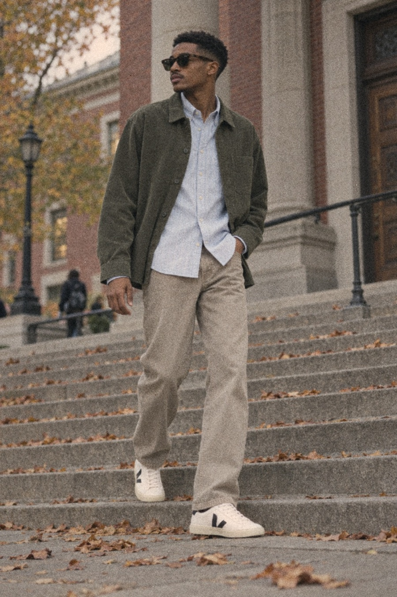
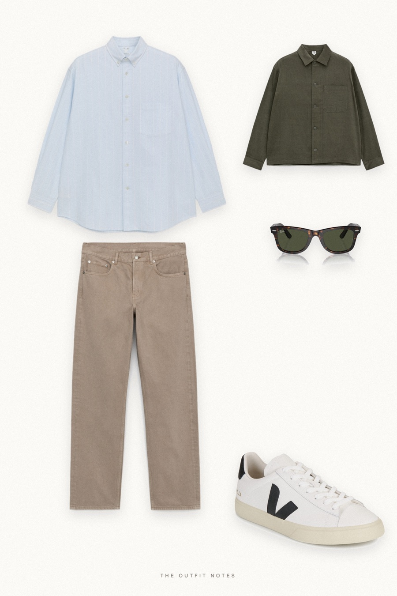
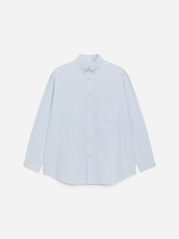
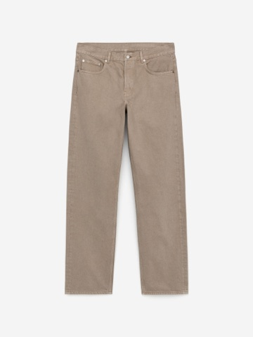
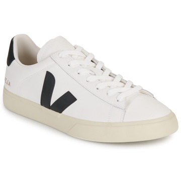

Campus Olive
corduroy over stripes, ecru denim


An easy smart casual fall outfit for men on campus: ARKET corduroy overshirt in olive over a light blue striped oversized Oxford shirt, ARKET OCEAN loose straight jeans in ecru, Veja Campo sneakers and Ray-Ban New Wayfarer sunglasses. Affordable layering that reads polished, perfect for student and 9-to-5 looks.
The pieces
This page contains affiliate links: if you buy through them, we may earn a commission at no extra cost to you. Disclosure.

ARKET
Striped oversized oxford shirt
Shop ARKET
ARKET
Olive corduroy overshirt
Shop
ARKET
Ecru straight jeans
Shop
Veja
White black leather sneakers
Shop Ray-Ban
Ray-Ban
Tortoise wayfarer sunglasses
Shop
Prices are indicative, taken when the look was published, and may have changed. Pictures of the outfit are AI-generated illustrations of real products; the product photos are the retailers' own.
Published 1 October 2026.